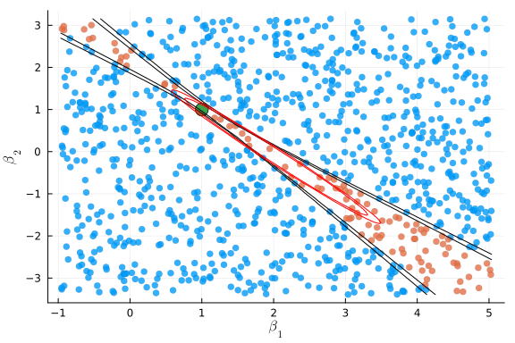
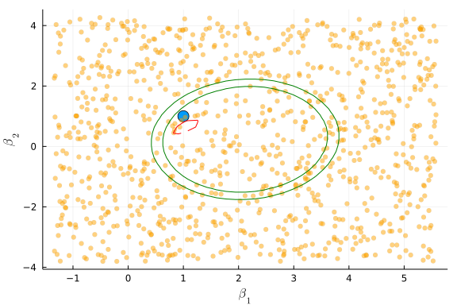
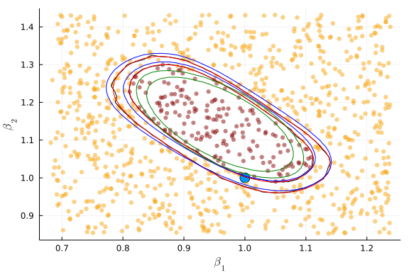

This work is licensed under a Creative Commons Attribution-ShareAlike 4.0 International License
About this document¶
This document was created using Weave.jl. The code is available in on github. The same document generates both static webpages and associated jupyter notebook.
Identification robust inference¶
As discussed in section 9 of Newey and McFadden (1994)1, there are three classic types of statistics for testing restrictions on parameters. Suppose you want to test $H_0: a(\theta) = 0$. Let $\hat{\theta}$ denote the unrestricted estimate, and let $\hat{\theta}^r$ denote the estimate of $\theta$ subject to the restriction. Wald test-statistics are based on $\hat{\theta}-\hat{\theta}^r$. Lagrange multiplier tests look at the distribution of the estimated Lagrange multiplier. Likelihood ratio (aka distance metric in Newey and McFadden (1994)1) tests look at $Q_n(\hat{\theta}) - Q_n(\hat{\theta}^r)$. If we consider testing $H_0: \theta = \vartheta$ for some fixed $\vartheta$, then the usual approach based on the asymptotic normality of $\hat{\theta}$ discussed above is exactly the same as the Wald test of this restriction. As discussed by Newey and McFadden (1994)1, under standard assumptions, all three testing approaches are asymptotically equivalent. However, the tests can and will differ in finite samples. More importantly, in the face of identification problems, Wald tests tend to break down, while Lagrange multiplier and likelihood ratio style tests can continue to work.
By identification robust, we mean an inference procedure that has correct size regardless of whether identification is strong, weak, or partial. In the asymptotic normality of extremum estimators theorem above, non-strong identification will create problems for assumption 3, in particular the assumption that the Hessian is non-singular. For this section, we will focus on GMM estimators. Identification problems most often arrive and have been studied in the context of GMM. Also, it is not difficult to transform other extremum estimators into GMM.
For a GMM objective function of the form: , if we assume:
-
$1/\sqrt{n} \sum_i g_i(\theta_0) \indist N(0,\Sigma)$
-
$1/n \sum_i \nabla g_i(\theta) \inprob E[\nabla g(\theta)]$, $W_n \inprob W$
-
$(D’WD)$ is nonsingular.
then the above theorem for asymptotic normality of extremum estimators implies that where If we additionally assume $W_n \inprob \Sigma^{-1}$, e.g. observations are independent and $W_n = \widehat{Var}(g_i(\theta))^{-1}$, then the asymptotic variance simplifies to $(D’ \Sigma D)^{-1}$.
Anderson-Rubin test¶
As already stated, the assumption that $(D’WD)$ is nonsingular is problematic if we want to allow for identification problems. However, if we assume only that
-
$1/\sqrt{n} \sum_i g_i(\theta_0) \indist N(0,\Sigma)$
-
$W_n \inprob \Sigma^{-1}$
then where $m$ is the number of moments (dimension of $g_i(\theta)$). This is called the Anderson-Rubin test. Note that this result holds without any explicit nonsingular assumption about a Hessian. Hence, there is hope that this result would be true even with identification problems. Indeed, it is. Stock and Wright (2000)2 first proposed using this test statistic for weakly identified GMM estimators. Stock, Wright, and Yogo (2002)3 gives an overview of this test and related tests with a focus on linear IV. Caner (2009)4 discusses this test in the context of GMM.
Typical usage of the AR test is to invert the test to construct a confidence region for $\theta$. For each $\theta \in \Theta$, let and let $c_{\alpha}= \alpha$ quantile of $\chi^2_m$. Then a $\alpha$ confidence region for $\theta_0$ is
Example: IV logit demand¶
A common way to model demand for differentiated products is to aggregate an individual discrete choice. We will look at the simplest such model here. This is a model for when we have data on product market shares, $y_j$, and product attributes, $x_j$, for many different markets. In concrete applications, markets may be defined geographically, temporally, by consumer segment, or some combination thereof.
Consider a single good, which consumers chooose to purchase or not. Consumer $i$’s utility from consuming the good is where $x_j$ are the observed attributes of the good in market $j$, $\xi_j$ is a market level demand shock, and $\epsilon_{ij}$ is an individual taste shock. Person $i$ purchases the good if $u_{ij} \geq 0$. Aggregating individual purchases implies that the market share in market $j$ is where $F_{-\epsilon}$ is the CDF of $-\epsilon$.
We assume that $\epsilon_{ij}$ is independent of $x_j$ and $\xi_j$. Typically, $x_j$ includes some easily adjusted product attributes, such as price, so we want to allow $x_j$ to be correlated with $\xi_j$. Assume that we have some instruments $z_j$ such that $\Er[\xi_j z_j]=0.$ We can write this moment condition in terms of observables and $\beta$ as This is the moment condition we will use to estimate $\beta$.
First, we will simulate the model, then estimate it. This code looks at three variants of GMM.
First, it computes an estimate with $W_n = I$.
Second, it computes an efficiently weighted estimated with where $\hat{\theta}_{(1)}$ is the first estimate.
Third, it computes the continuous updating estimator, which uses $AR(\theta)$ as the objective function ( $W$ is “continuously updated” to be $\widehat{Var}( g_i(\theta))$ ).
using Optim, ForwardDiff, LinearAlgebra, Distributions
function simulate_ivshare(n,β,γ,ρ)
z = randn(n, size(γ)[1])
endo = randn(n, length(β))
x = z*γ .+ endo
ξ = rand(Normal(0,sqrt((1.0-ρ^2))),n).+endo[:,1]*ρ
y = cdf.(Logistic(), x*β .+ ξ)
return((y=y,x=x,z=z))
end
n = 100
k = 2
iv = 3
β0 = ones(k)
π0 = vcat(5*I,ones(iv-k,k))
ρ = 0.5
(y,x,z) = simulate_ivshare(n,β0,π0,ρ)
function gi_ivshare(β,y,x,z)
ξ = quantile.(Logistic(),y) .- x*β
ξ.*z
end
function gmmObj(θ,gi,W)
g = gi(θ)
m = mean(g,dims=1)
(size(g)[1]*( m*W*m')[1]) # return scalar, not 1x1 array
end
function gmmVar(θ,gi,W)
g = gi(θ)
n = size(g)[1]
D = ForwardDiff.jacobian(θ->mean(gi(θ),dims=1),θ)
Σ = cov(gi(θ))
1/n*inv(D'*W*D)*(D'*W*Σ*W*D)*inv(D'*W*D)
end
function ar(θ,gi)
gmmObj(θ,gi,inv(cov(gi(θ))))
end
ar (generic function with 1 method)
opt1 = optimize(θ->gmmObj(θ, β->gi_ivshare(β,y,x,z) ,I),
zeros(k), BFGS(), autodiff =:forward)
@show β1 = opt1.minimizer
β1 = opt1.minimizer = [1.0182986797223397, 1.0089485255913304]
display(gmmVar(β1, β->gi_ivshare(β,y,x,z),I))
2×2 Array{Float64,2}:
0.000447813 -7.09023e-5
-7.09023e-5 0.000394736
opteff = optimize(θ->gmmObj(θ,β->gi_ivshare(β,y,x,z),inv(cov(gi_ivshare(β1,y,x,z)))),
zeros(k), BFGS(), autodiff =:forward)
@show βeff = opteff.minimizer
βeff = opteff.minimizer = [1.0183281895476939, 1.008985471629651]
display(gmmVar(βeff,β->gi_ivshare(β,y,x,z),inv(cov(gi_ivshare(β1,y,x,z)))))
2×2 Array{Float64,2}:
0.000447421 -7.14111e-5
-7.14111e-5 0.00039407
ar_ivshare = θ->ar(θ,β->gi_ivshare(β,y,x,z))
optcue = optimize(ar_ivshare,
β0, BFGS(), autodiff =:forward)
@show βcue = optcue.minimizer
βcue = optcue.minimizer = [1.0183288153534862, 1.008984973441169]
Vcue = gmmVar(βcue,β->gi_ivshare(β,y,x,z),inv(cov(gi_ivshare(βcue,y,x,z))))
display(Vcue)
2×2 Array{Float64,2}:
0.000447421 -7.14111e-5
-7.14111e-5 0.00039407
Now we compare confidence regions based on the Wald test, and from inverting the AR statistic.
using Plots, LaTeXStrings
Plots.gr()
function plot_cr(β,V, AR)
lb = β - sqrt.(diag(V))*5
ub = β + sqrt.(diag(V))*5
ntest = 1000
βtest = [rand(length(β)).*(ub-lb) .+ lb for i in 1:ntest]
arstat = AR.(βtest)
βtest = vcat(βtest'...)
crit = quantile(Chisq(size(z)[2]), 0.9)
scatter(βtest[:,1],βtest[:,2], group=(arstat.<crit), legend=false,
markersize=4, markerstrokewidth=0.0, seriesalpha=0.8,
xlabel=L"\beta_1", ylabel=L"\beta_2")
scatter!([β0[1]], [β0[2]], markersize=8)
b1 = lb[1]:(ub[1]-lb[1])/100:ub[1]
b2 = lb[2]:(ub[2]-lb[2])/100:ub[2]
arf = (a,b) -> cdf(Chisq(size(z)[2]),AR([a,b]))
contour!(b1,b2,arf, levels = [0.9, 0.95],
contour_labels=false, legend=false,
label="AR CI",
c=cgrad([:black,:black],[0.0,1.0]))
waldf = (a,b) -> cdf(Chisq(length(βcue)),([a,b]-βcue)'*inv(Vcue)*([a,b]-βcue))
contour!(b1,b2,waldf, levels = [0.9, 0.95],
contour_labels=false,
label="Wald CI", c=cgrad([:red,:red], [0.0,1.0]),
legend=false)
end
plot_cr(βcue,Vcue, ar_ivshare)
The two confidence regions above are not too different because the simulated data was strongly identified. Let’s see what happens when we change the simulation to have weaker identification.
# make π0 nearly rank-deficient
π0 = ones(iv,k) .+ vcat(I*0.05,zeros(iv-k,k))
ρ = 0.5
(y,x,z) = simulate_ivshare(n,β0,π0,ρ)
ar_ivshare = θ->ar(θ,β->gi_ivshare(β,y,x,z))
optcue = optimize(ar_ivshare,
β0, BFGS(), autodiff =:forward)
@show βcue = optcue.minimizer
βcue = optcue.minimizer = [0.5961808788571339, 1.4817274296498473]
Vcue = gmmVar(βcue,β->gi_ivshare(β,y,x,z),inv(cov(gi_ivshare(βcue,y,x,z))))
display(Vcue)
2×2 Array{Float64,2}:
0.443472 -0.479362
-0.479362 0.524355
plot_cr(βcue,Vcue, ar_ivshare)

Now the confidence regions are dramatically different. Does either one have correct coverage? Let’s simulate to find the size of the AR and Wald tests of $H_0 : \beta = \beta_0$
S = 500
n = 100
function sim_p(π0)
(y,x,z) = simulate_ivshare(n,β0,π0,ρ)
opt1 = optimize(θ->gmmObj(θ, β->gi_ivshare(β,y,x,z) ,I),
β0, BFGS(), autodiff =:forward)
if (!opt1.g_converged)
opt1 = optimize(θ->gmmObj(θ, β->gi_ivshare(β,y,x,z) ,I),
β0, NewtonTrustRegion(), autodiff =:forward)
end
β1 = opt1.minimizer
V1 = gmmVar(β1,β->gi_ivshare(β,y,x,z),I)
optcue = optimize(θ->ar(θ,β->gi_ivshare(β,y,x,z)),
β0, BFGS(), autodiff =:forward)
if (!optcue.g_converged)
optcue = optimize(θ->ar(θ,β->gi_ivshare(β,y,x,z)),
β0, NewtonTrustRegion(), autodiff =:forward)
end
if (!optcue.g_converged)
display(optcue)
βcue = deepcopy(β1)
else
βcue = optcue.minimizer
end
Vcue =
gmmVar(βcue,β->gi_ivshare(β,y,x,z),inv(cov(gi_ivshare(βcue,y,x,z))))
arp = θ->(1.0-cdf(Chisq(size(z)[2]),ar(θ,β->gi_ivshare(β,y,x,z))))
waldp = θ->(1.0-cdf(Chisq(length(βcue)),(θ-βcue)'*inv(Vcue)*(θ-βcue)))
waldp1 = θ->(1.0-cdf(Chisq(length(β1)),(θ-β1)'*inv(V1)*(θ-β1)))
[arp(β0) waldp(β0) waldp1(β0)]
end
πweak = ones(iv,k) .+ vcat(diagm(0=>fill(0.01,k)),zeros(iv-k,k))
πstrong = vcat(5*diagm(0=>ones(k)),ones(iv-k,k))
@time pweak=vcat([sim_p(πweak) for s in 1:S]...)
* Status: failure (reached maximum number of iterations) (line search fail
ed)
* Candidate solution
Minimizer: [-5.38e+03, 6.07e+03]
Minimum: 9.538249e-01
* Found with
Algorithm: Newton's Method (Trust Region)
Initial Point: [1.00e+00, 1.00e+00]
* Convergence measures
|x - x'| = 2.06e+00 ≰ 0.0e+00
|x - x'|/|x'| = 3.40e-04 ≰ 0.0e+00
|f(x) - f(x')| = 7.61e-08 ≰ 0.0e+00
|f(x) - f(x')|/|f(x')| = 7.98e-08 ≰ 0.0e+00
|g(x)| = 2.06e-08 ≰ 1.0e-08
* Work counters
Seconds run: 1 (vs limit Inf)
Iterations: 1000
f(x) calls: 1001
∇f(x) calls: 1001
∇²f(x) calls: 1001
* Status: failure (reached maximum number of iterations) (line search fail
ed)
* Candidate solution
Minimizer: [-4.83e+03, 4.53e+03]
Minimum: 2.466659e-01
* Found with
Algorithm: Newton's Method (Trust Region)
Initial Point: [1.00e+00, 1.00e+00]
* Convergence measures
|x - x'| = 1.64e+00 ≰ 0.0e+00
|x - x'|/|x'| = 3.39e-04 ≰ 0.0e+00
|f(x) - f(x')| = 5.05e-08 ≰ 0.0e+00
|f(x) - f(x')|/|f(x')| = 2.05e-07 ≰ 0.0e+00
|g(x)| = 1.64e-08 ≰ 1.0e-08
* Work counters
Seconds run: 0 (vs limit Inf)
Iterations: 1000
f(x) calls: 1001
∇f(x) calls: 1001
∇²f(x) calls: 1001
* Status: failure (reached maximum number of iterations) (line search fail
ed)
* Candidate solution
Minimizer: [-6.62e+03, 5.83e+03]
Minimum: 1.156521e+00
* Found with
Algorithm: Newton's Method (Trust Region)
Initial Point: [1.00e+00, 1.00e+00]
* Convergence measures
|x - x'| = 2.26e+00 ≰ 0.0e+00
|x - x'|/|x'| = 3.41e-04 ≰ 0.0e+00
|f(x) - f(x')| = 9.03e-08 ≰ 0.0e+00
|f(x) - f(x')|/|f(x')| = 7.81e-08 ≰ 0.0e+00
|g(x)| = 2.26e-08 ≰ 1.0e-08
* Work counters
Seconds run: 0 (vs limit Inf)
Iterations: 1000
f(x) calls: 1001
∇f(x) calls: 1001
∇²f(x) calls: 1001
* Status: failure (reached maximum number of iterations) (line search fail
ed)
* Candidate solution
Minimizer: [-6.99e+03, 7.74e+03]
Minimum: 1.065352e+00
* Found with
Algorithm: Newton's Method (Trust Region)
Initial Point: [1.00e+00, 1.00e+00]
* Convergence measures
|x - x'| = 2.64e+00 ≰ 0.0e+00
|x - x'|/|x'| = 3.42e-04 ≰ 0.0e+00
|f(x) - f(x')| = 1.27e-07 ≰ 0.0e+00
|f(x) - f(x')|/|f(x')| = 1.19e-07 ≰ 0.0e+00
|g(x)| = 2.64e-08 ≰ 1.0e-08
* Work counters
Seconds run: 0 (vs limit Inf)
Iterations: 1000
f(x) calls: 1001
∇f(x) calls: 1001
∇²f(x) calls: 1001
12.669214 seconds (22.73 M allocations: 2.407 GiB, 26.49% gc time)
@time pstrong=vcat([sim_p(πstrong) for s in 1:S]...)
1.235078 seconds (1.08 M allocations: 743.800 MiB, 40.82% gc time)
pgrid = 0:0.01:1
plot(pgrid, p->mean( pstrong[:,1] .<= p), legend=:topleft,
label="AR, strong ID", style=:dash, color=:red,
xlabel="p", ylabel="P(p value < p)",
title="Simulated CDF of p-values")
plot!(pgrid, p->mean( pstrong[:,2] .<= p),
label="Wald CUE, strong ID", style=:dash, color=:blue)
plot!(pgrid, p->mean( pstrong[:,3] .<= p),
label="Wald I, strong ID", style=:dash, color=:green)
plot!(pgrid, p->mean( pweak[:,1] .<= p),
label="AR, weak ID", style=:solid, color=:red)
plot!(pgrid, p->mean( pweak[:,2] .<= p),
label="Wald CUE, weak ID", style=:solid, color=:blue)
plot!(pgrid, p->mean( pweak[:,3] .<= p),
label="Wald I, weak ID", style=:solid, color=:green)
plot!(pgrid,pgrid,alpha=0.1, label="")
We see that the Wald test has fairly large size distortions, even when identification is strong. The AR test has approximately correct size for both the weakly and strongly identified DGP.
Other identification robust tests¶
There are also identification robust versions of likelihood ratio and lagrange multiplier test. Moreire (2003)5 proposed a conditional likelihood ratio (CLR) test for weakly identified linear IV models. Kleibergen (2005)6 developed a Lagrange multiplier (often called the KLM) test and extended Moreira’s CLR test to weakly identified GMM models. More recently, Andrews and Guggenberge (2015) 7 and Andrews and Guggenberge (2017) 8 showed the validity of these tests under more general conditions. These tests are somewhat more complicated than the AR test, but they have the advantage that they are often more powerful. The AR test statistic has a $\chi^2_{m}$ distribution, where $m$ is the number of moments. The CLR and KLM statistics under strong identification have $\chi^2_k$ distributions (as does the Wald statistic), where $k$ is the number of parameters. Consequently, when the model is overidentified, the CLR and LM tests are more powerful than the AR test.
Here is an implementation of the KLM and CLR statistics. The names of variables roughly follows the notation of Andrews and Guggenberge(2017) 8.
using ForwardDiff, Plots, Optim
Plots.gr()
function statparts(θ,gi)
# compute common components of klm, rk, & clr stats
# follows notation of Andrews & Guggenberger 2017, section 3.1
function P(A::AbstractMatrix) # projection matrix
A*pinv(A'*A)*A'
end
giθ = gi(θ)
p = length(θ)
(n, k) = size(giθ)
Ω = cov(giθ)
gn=mean(gi(θ), dims=1)'
#G = ForwardDiff.jacobian(θ->mean(gi(θ),dims=1),θ)
Gi= ForwardDiff.jacobian(gi,θ)
Gi = reshape(Gi, n , k, p)
G = mean(Gi, dims=1)
Γ = zeros(eltype(G),p,k,k)
D = zeros(eltype(G),k, p)
for j in 1:p
for i in 1:n
Γ[j,:,:] += (Gi[i,:,j] .- G[1,:,j]) * giθ[i,:]'
end
Γ[j,:,:] ./= n
D[:,j] = G[1,:,j] - Γ[j,:,:]*inv(Ω)*gn
end
return(n,k,p,gn, Ω, D, P)
end
function klm(θ,gi)
(n,k,p,gn, Ω, D, P) = statparts(θ,gi)
lm = n*(gn'*Ω^(-1/2)*P(Ω^(-1/2)*D)*Ω^(-1/2)*gn)[1]
end
function clr(θ,gi)
(n,k,p,gn, Ω, D, P) = statparts(θ,gi)
rk = eigmin(n*D'*inv(Ω)*D)
AR = (n*gn'*inv(Ω)*gn)[1]
lm = (n*(gn'*Ω^(-1/2)*P(Ω^(-1/2)*D)*Ω^(-1/2)*gn))[1]
lr = 1/2*(AR - rk + sqrt( (AR-rk)^2 + 4*lm*rk))
# simulate to find p-value
S = 5000
function randc(k,p,r,S)
χp = rand(Chisq(p),S)
χkp = rand(Chisq(k-p),S)
0.5.*(χp .+ χkp .- r .+
sqrt.((χp .+ χkp .- r).^2 .+ 4 .* χp.*r))
end
csim = randc(k,p,rk,S)
pval = mean(csim.<=lr)
end
clr (generic function with 1 method)
function plot_cr(β,V, tests::AbstractArray{Function}, labels; ngrid=30)
lb = β - sqrt.(diag(V))*5
ub = β + sqrt.(diag(V))*5
fig=scatter([β0[1]], [β0[2]], markersize=8, legend=false,
xlabel=L"\beta_1", ylabel=L"\beta_2")
ntest = 1000
βtest = [rand(2).*(ub-lb) .+ lb for i in 1:ntest]
pval = tests[1].(βtest)
βtest = vcat(βtest'...)
crit = 0.9
fig=scatter!(βtest[:,1],βtest[:,2], group=(pval.<crit), legend=false,
markersize=4, markerstrokewidth=0.0, seriesalpha=0.5,
palette=:heat)
b1 = lb[1]:(ub[1]-lb[1])/ngrid:ub[1]
b2 = lb[2]:(ub[2]-lb[2])/ngrid:ub[2]
colors = [:black, :red, :blue, :green]
for t in 1:length(tests)
fig=contour!(b1,b2,(a,b)->tests[t]([a,b]),
levels = [0.9, 0.95],
contour_labels=false, legend=false,
label = labels[t],
c=cgrad([colors[t],colors[t]],[0.0,1.0]))
end
fig
end
plot_cr (generic function with 2 methods)
Here’s what the confidence regions look like when identification is fairly weak. The green lines are the Wald confidence region, blue is AR, red is KLM, and black is CLR.
n = 50
k = 2
iv =3
π0 = vcat(0.1*diagm(0=>ones(k)),0.2*ones(iv-k,k))
ρ = 0.5
(y,x,z) = simulate_ivshare(n,β0,π0,ρ)
opt1 = optimize(θ->gmmObj(θ, β->gi_ivshare(β,y,x,z) ,I),
β0, BFGS(), autodiff =:forward)
β1 = opt1.minimizer
V1 = gmmVar(β1,β->gi_ivshare(β,y,x,z),I)
pklm = θ->cdf(Chisq(length(βcue)),klm(θ, β->gi_ivshare(β,y,x,z)))
par = θ->cdf(Chisq(size(z)[2]), ar(θ, β->gi_ivshare(β,y,x,z)))
pclr = θ->clr(θ, β->gi_ivshare(β,y,x,z))
pwald = θ -> cdf(Chisq(length(β1)),(θ-β1)'*inv(V1)*(θ-β1))
plot_cr(β1,V1, [pclr, pklm, par, pwald],
["CLR","KLM","AR","Wald"], ngrid=40)

Here’s what the confidence regions look like when identification is stronger.
n = 50
k = 2
iv =3
π0 = vcat(3*diagm(0=>ones(k)),ones(iv-k,k))
ρ = 0.5
(y,x,z) = simulate_ivshare(n,β0,π0,ρ)
opt1 = optimize(θ->gmmObj(θ, β->gi_ivshare(β,y,x,z) ,I),
β0, BFGS(), autodiff =:forward)
β1 = opt1.minimizer
V1 = gmmVar(β1,β->gi_ivshare(β,y,x,z),I)
pklm = θ->cdf(Chisq(length(βcue)),klm(θ, β->gi_ivshare(β,y,x,z)))
par = θ->cdf(Chisq(size(z)[2]), ar(θ, β->gi_ivshare(β,y,x,z)))
pclr = θ->clr(θ, β->gi_ivshare(β,y,x,z))
pwald = θ -> cdf(Chisq(length(β1)),(θ-β1)'*inv(V1)*(θ-β1))
plot_cr(β1,V1, [pclr, pklm, par, pwald],
["CLR","KLM","AR","Wald"], ngrid=40)

Check the size
S = 300
n = 100
function sim_p(π0)
(y,x,z) = simulate_ivshare(n,β0,π0,ρ)
opt1 = optimize(θ->gmmObj(θ, β->gi_ivshare(β,y,x,z) ,I),
β0, BFGS(), autodiff =:forward)
if (!opt1.g_converged)
opt1 = optimize(θ->gmmObj(θ, β->gi_ivshare(β,y,x,z) ,I),
β0, NewtonTrustRegion(), autodiff =:forward)
end
β1 = opt1.minimizer
V1 = gmmVar(β1,β->gi_ivshare(β,y,x,z),I)
pklm = θ->cdf(Chisq(length(β1)),klm(θ, β->gi_ivshare(β,y,x,z)))
par = θ->cdf(Chisq(size(z)[2]), ar(θ, β->gi_ivshare(β,y,x,z)))
pclr = θ->clr(θ, β->gi_ivshare(β,y,x,z))
pwald = θ -> cdf(Chisq(length(β1)),(θ-β1)'*inv(V1)*(θ-β1))
[par(β0) pwald(β0) pclr(β0) pklm(β0)]
end
πweak = ones(iv,k) .+ vcat(diagm(0=>fill(0.01,k)),zeros(iv-k,k))
πstrong = vcat(3*diagm(0=>ones(k)),ones(iv-k,k))
pweak=vcat([sim_p(πweak ) for s in 1:S]...)
pstrong=vcat([sim_p(πstrong) for s in 1:S]...)
pgrid = 0:0.01:1
plot(pgrid, p->mean( pstrong[:,1] .<= p), legend=:topleft,
label="AR, strong ID", style=:dash, color=:blue,
xlabel="p", ylabel="P(p value < p)",
title="Simulated CDF of p-values")
plot!(pgrid, p->mean( pstrong[:,2] .<= p),
label="Wald I, strong ID", style=:dash, color=:green)
plot!(pgrid, p->mean( pstrong[:,3] .<= p),
label="CLR, strong ID", style=:dash, color=:black)
plot!(pgrid, p->mean( pstrong[:,4] .<= p),
label="KLM, strong ID", style=:dash, color=:red)
plot!(pgrid, p->mean( pweak[:,1] .<= p),
label="AR, weak ID", style=:solid, color=:blue)
plot!(pgrid, p->mean( pweak[:,2] .<= p),
label="Wald I, weak ID", style=:solid, color=:green)
plot!(pgrid, p->mean( pweak[:,3] .<= p),
label="CLR, weak ID", style=:solid, color=:black)
plot!(pgrid, p->mean( pweak[:,4] .<= p),
label="KLM, weak ID", style=:solid, color=:red)
plot!(pgrid,pgrid,alpha=0.5, label="")
References¶
-
Whitney K. Newey and Daniel McFadden. Chapter 36 large sample estimation and hypothesis testing. In Handbook of Econometrics, volume 4 of Handbook of Econometrics, pages 2111 – 2245. Elsevier, 1994. URL: http://www.sciencedirect.com/science/article/pii/S1573441205800054, doi:https://doi.org/10.1016/S1573-441280005-4. ↩↩↩
-
James H. Stock and Jonathan H. Wright. Gmm with weak identification. Econometrica, 68:1055–1096, 2000. URL: https://onlinelibrary.wiley.com/doi/abs/10.1111/1468-0262.00151, arXiv:https://onlinelibrary.wiley.com/doi/pdf/10.1111/1468-0262.00151, doi:10.1111/1468-0262.00151. ↩
-
James H Stock, Jonathan H Wright, and Motohiro Yogo. A survey of weak instruments and weak identification in generalized method of moments. Journal of Business & Economic Statistics, 20:518–529, 2002. URL: https://doi.org/10.1198/073500102288618658, arXiv:https://doi.org/10.1198/073500102288618658, doi:10.1198/073500102288618658. ↩
-
Mehmet Caner. Testing, estimation in gmm and cue with nearly-weak identification. Econometric Reviews, 29:330–363, 2009. URL: https://doi.org/10.1080/07474930903451599, arXiv:https://doi.org/10.1080/07474930903451599, doi:10.1080/07474930903451599. ↩
-
Marcelo J. Moreira. A conditional likelihood ratio test for structural models. Econometrica, 71:1027–1048, 2003. URL: https://onlinelibrary.wiley.com/doi/abs/10.1111/1468-0262.00438, arXiv:https://onlinelibrary.wiley.com/doi/pdf/10.1111/1468-0262.00438, doi:10.1111/1468-0262.00438. ↩
-
Frank Kleibergen. Testing parameters in gmm without assuming that they are identified. Econometrica, 73:1103–1123, 2005. URL: https://onlinelibrary.wiley.com/doi/abs/10.1111/j.1468-0262.2005.00610.x, arXiv:https://onlinelibrary.wiley.com/doi/pdf/10.1111/j.1468-0262.2005.00610.x, doi:10.1111/j.1468-0262.2005.00610.x. ↩
-
Donald Andrews and Patrik Guggenberger. Identification-and singularity-robust inference for moment condition models. 2015. URL: https://papers.ssrn.com/sol3/papers.cfm?abstract_id=2545374. ↩
-
Donald W.K. Andrews and Patrik Guggenberger. Asymptotic size of kleibergen’s lm and conditional lr tests for moment condition models. Econometric Theory, 33:1046–1080, 2017. doi:10.1017/S0266466616000347. ↩↩